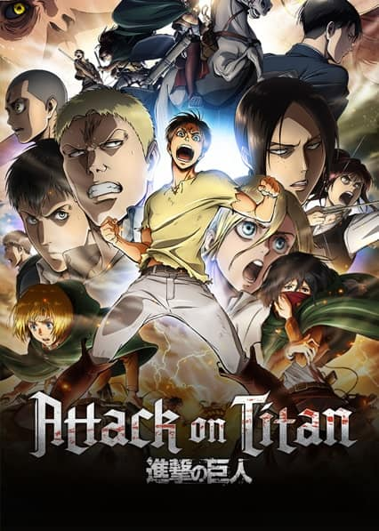
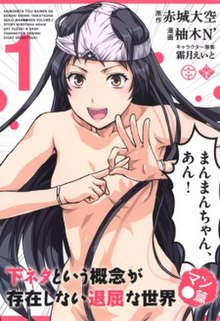

Alguns Animes que já assisti e oque achei!!
1°- Boku dake ga inai machi
Nível: 4/5 🖤🖤🖤🖤🤍

A história segue Satoru Fujinuma, um jovem que vive em Chiba
que de alguma forma possui uma habilidade conhecida como "Revivescência",
que o envia de volta no tempo momentos antes de um incidente com risco de vida,
permitindo-lhe evitar que aconteça novamente.
Conheça mais sobre ERASED: Leia +
2°- Shingeki no Kyoujin
Nível: 5/5 🖤🖤🖤🖤🖤

Para escapar dos titãs, gigantes devoradores de homens, a humanidade se refugiou em cidades
cercadas por enormes muralhas. Quando eles voltam a atacar,
Eren Yeager se junta à luta para combater as criaturas.
Conheça mais sobre SNK: Leia +
3°- Boku no Pico
Nível: 1/5 🖤🤍🤍🤍🤍

Um menino afeminado chamado Pico, trabalha no bar de seu avô durante o verão,
com a esperança de fazer alguns amigos. Tamotsu está na praia e vê Pico por uma luneta.
Ele se apaixona por Pico imediatamente. Mais tarde, ele o encontra no restaurante de Ojiisan,
avô de Pico, que sugere que eles passem mais tempo juntos.
Conheça mais sobre Boku no Pico: Leia +
4°- Itadaki Seieki
Nível: 5/5 🖤🖤🖤🖤🖤

Quando Kanzaki recebe sua primeira carta de amor de uma menina fofa de outra classe,
a última coisa que ele esperava quando foi ao encontro dela era ser chutado na cara antes mesmo de dizer olá!
Acontece que sua admiradora, Mari Setagoya, é uma vampira, que não consegue lidar muito bem com o sabor de sangue.
Mas ela precisa beber energia vital para sobreviver, e talvez um fluido corporal possa ser um excelente substituto...
Conheça mais sobre Itadaki Seieki: Leia +
5°- Shimoneta
Nível: 5/5 🖤🖤🖤🖤🖤

Um prefeito de escola aparentemente feminino treinado por Matsukage
para aderir a um código moral estrito que gira principalmente em torno de proteger
Anna de todas as influências potencialmente imorais, incluindo itens mundanos como cestas de
basquete e rolos de papel higiênico.
Conheça mais sobre Shimoneta: Leia +